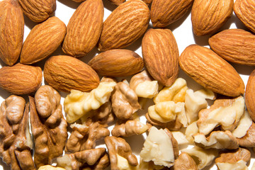

Vienvenido a tu pagina de resetas favoritas
Nueces y Almendras Confitadas
la mejor reseta de almedras y nuezes confitadas
Lista de ingrediente
- -Nueces y almendras, peladas
- Almíbar: 1 litro de agua y 1 kilo de azúcar
Ve una imagen de como queda , un videos tutorial, localizacion de la reseta tipica

Contactanos